UDN
Search public documentation:
DevelopmentKitGemsCreatingASimpleBlobShadowCH
English Translation
日本語訳
한국어
Interested in the Unreal Engine?
Visit the Unreal Technology site.
Looking for jobs and company info?
Check out the Epic games site.
Questions about support via UDN?
Contact the UDN Staff
日本語訳
한국어
Interested in the Unreal Engine?
Visit the Unreal Technology site.
Looking for jobs and company info?
Check out the Epic games site.
Questions about support via UDN?
Contact the UDN Staff
创建简单的模糊阴影
最后一次测试是在2011年3月份的UDK版本上进行的。
可以与 PC 兼容
概述
贴花材质布局
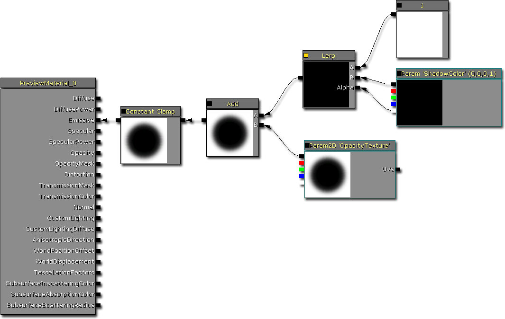
- Constant Clamp - 使用它可以确保将所有前面计算的输出值范围都控制在 0.f 到 1.f 范围之间。模块在超出这个范围后仍然可以正常工作，但是在这个实例中不可取。
- Add - 使用它可以将不透明纹理蒙板添加到插值的阴影颜色中。添加一个‘倒置’的阴影蒙板，将会向那些不属于阴影的区域添加 1.f。这样，在限定这些值的时候，它们将会变为 1.f，而且在渲染贴花的时候可见。
- 'Opacity Texture' - 它可以定义阴影蒙板。不一定要使用圆环形的阴影，因此您可以创建其他静态阴影形状。
- Linear Interpolation - 它可以在 (1, 1, 1, 1) 和 'ShadowColor' 之间进行线性插值。通过使用 'ShadowColor' 的 Alpha 输出，您可以控制阴影的亮度和暗度。
- Constant [1] - 它是其中一个线性插入函数参数。它可以定义阴影的最大亮度，在这种情况下为 1。
- 'Shadow Color' - 它可以定义阴影的颜色。不一定要使用黑色。
相关主题
测试贴花材质
- 在内容浏览器中选择您的贴花材质
- 在您想要放置贴花的世界视图中右击，然后会出现一个关联菜单
- 左击任何一个 "添加可移动贴花： *" 或 "添加贴花： *"
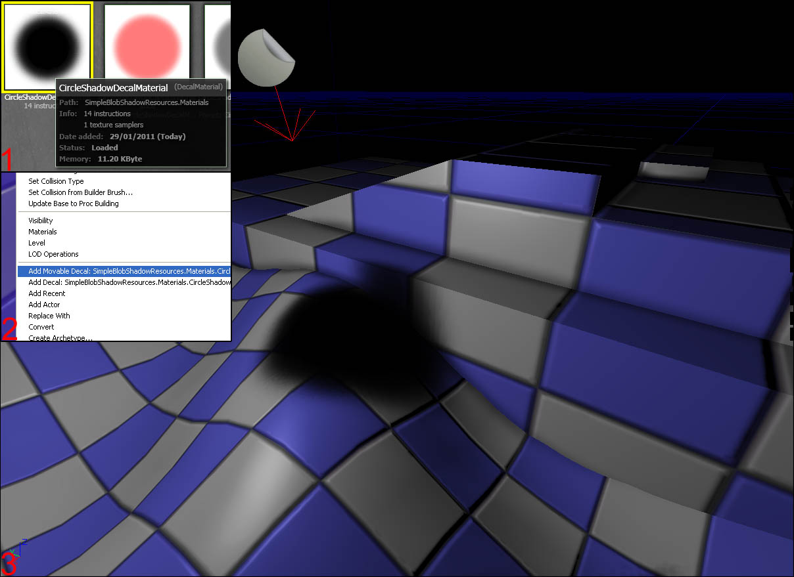
相关主题
创建并修改贴图材质实例
 这个对话框会出现。输入您想要存储材质实例的位置以及您想要调用它的目的。
这个对话框会出现。输入您想要存储材质实例的位置以及您想要调用它的目的。
 从这里，在您想要改变的属性的左侧点击复选框。这些复选框可以定义要覆盖的属性。您可以按自己的需要更改值。
从这里，在您想要改变的属性的左侧点击复选框。这些复选框可以定义要覆盖的属性。您可以按自己的需要更改值。
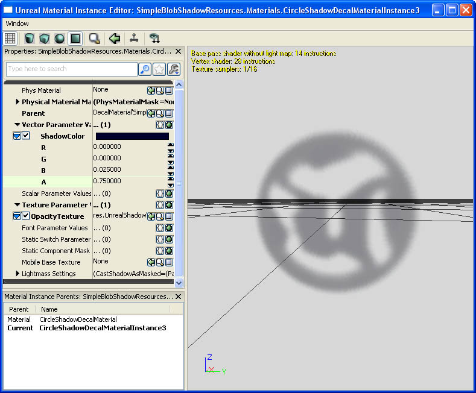
重复本章上面的步骤，测试您的新贴花材质实例。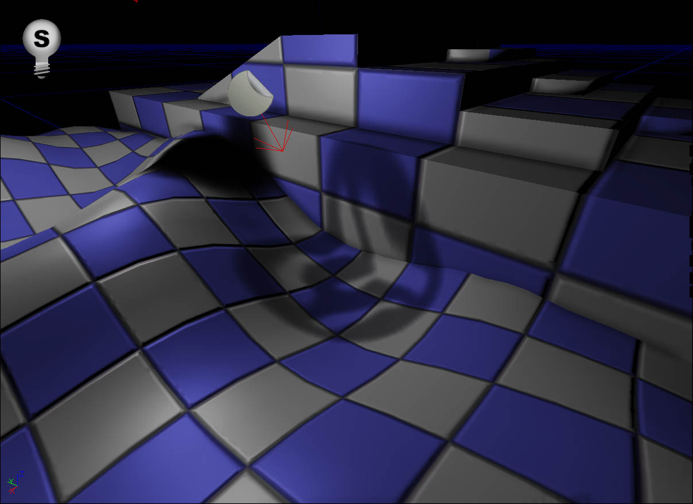
相关主题
向 actor 添加简单的模糊阴影
附加物
在这个示例中，会使用虚幻编辑器提供的附加物工具将一个简单的模糊阴影附加到插入的 actor。 添加您想要附加 可移动贴花 Actor 的 actor。在这种情况下，我已经添加了一个球体 interp actor。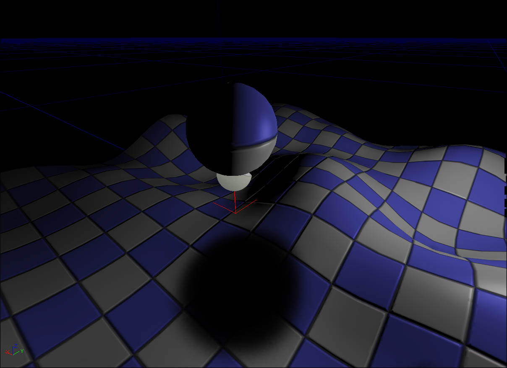
打开这个附加物窗口。默认情况下，现在将它放置在这里，而不是像以前一样附加给 内容浏览器。 在视窗中选择您希望附加的 actor，在附加物窗口中右击并点击“添加所选的 Actor”。
在视窗中选择您希望附加的 actor，在附加物窗口中右击并点击“添加所选的 Actor”。
 点击并按住 InterpActor_0（或者您想要附加贴花的 actor）右侧的某个黑色框，然后拖拽并释放 DecalActorMovable_1（或可移动贴花 actor）左侧的某个黑色框。现在附加这个可移动贴花 actor，然后与球体网格物体一起移动。
点击并按住 InterpActor_0（或者您想要附加贴花的 actor）右侧的某个黑色框，然后拖拽并释放 DecalActorMovable_1（或可移动贴花 actor）左侧的某个黑色框。现在附加这个可移动贴花 actor，然后与球体网格物体一起移动。
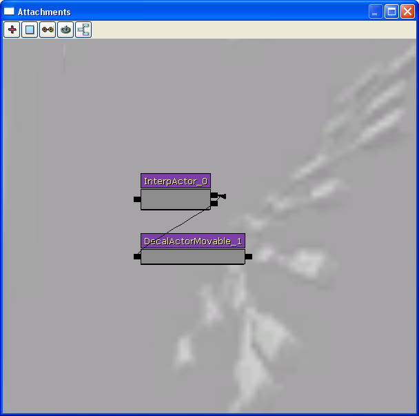
相关主题
Kismet
 在世界中选择这个可移动贴花 actor。通过按下工具栏上的
在世界中选择这个可移动贴花 actor。通过按下工具栏上的 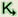
打开 Kismet 窗口。右击 Kismet 空白处，然后添加贴花可移动 actor。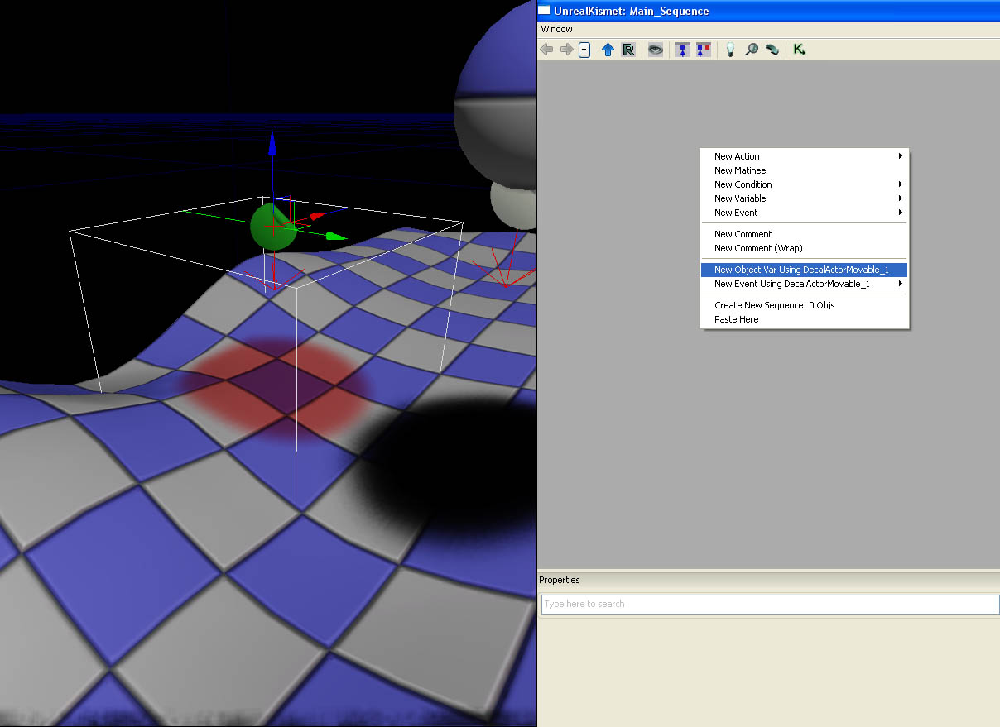
通过使用关联菜单添加玩家生成的事件。它将会允许 Kismet 发现正在生成一个玩家。它可以将 instigator（玩家的 pawn）输出到 Object 变量中。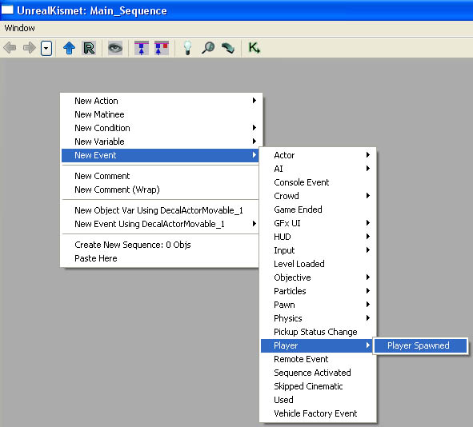
下一步，通过使用关联菜单添加 传送 操作。在玩家第一次生成的时候可移动贴花不会在玩家的 pawn 下方。这样，我们可以将可移动贴花 actor 传送到与玩家的 pawn 相同的地方。 将‘更新旋转’设置为 false。不需要更改可移动贴花 actor 的旋转。
将‘更新旋转’设置为 false。不需要更改可移动贴花 actor 的旋转。
 下一步，通过使用关联菜单添加一个 Object 变量。它允许 Kismet 存储对玩家的 pawn 的引用，可以在后面使用这个引用。
下一步，通过使用关联菜单添加一个 Object 变量。它允许 Kismet 存储对玩家的 pawn 的引用，可以在后面使用这个引用。
 将所有 Kismet 节点都连接在一起。要进行这项操作，左击小方框或三角形，然后将其拖拽到相应的目标。在玩家生成的时候，玩家生成的 Kisment 节点将激活发起者并将其输出到空的对象变量中。然后它会执行传送 Kismet 节点，它会将可移动贴花 actor 传送到与存储在对象变量中的玩家 pawn 相同的位置。这样可以保证在生成玩家的时候可移动贴花 actor 处于正确的位置。
将所有 Kismet 节点都连接在一起。要进行这项操作，左击小方框或三角形，然后将其拖拽到相应的目标。在玩家生成的时候，玩家生成的 Kisment 节点将激活发起者并将其输出到空的对象变量中。然后它会执行传送 Kismet 节点，它会将可移动贴花 actor 传送到与存储在对象变量中的玩家 pawn 相同的位置。这样可以保证在生成玩家的时候可移动贴花 actor 处于正确的位置。
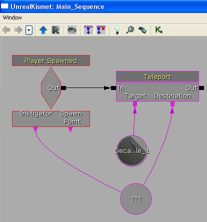
通过使用关联菜单将 附加 添加到 Actor 操作中。这个 Kismet 节点可以将 actor 附加到另一个 actor。在这种情况下，会将可移动贴花 actor 附加到玩家的 pawn。 将所有元素都连接在一起。附加到以前的指令上，在执行 传送 Kismet 节点的时候，它会执行 Attach Kismet 节点。这个 Kismet 节点会将可移动贴花 actor 附加到玩家的 pawn。
将所有元素都连接在一起。附加到以前的指令上，在执行 传送 Kismet 节点的时候，它会执行 Attach Kismet 节点。这个 Kismet 节点会将可移动贴花 actor 附加到玩家的 pawn。
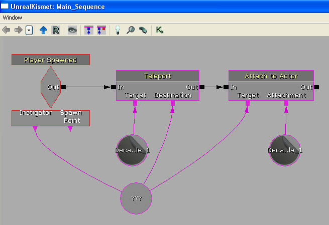
启动这个关卡，您会发现在您到处移动的时候将红色贴花附加给您。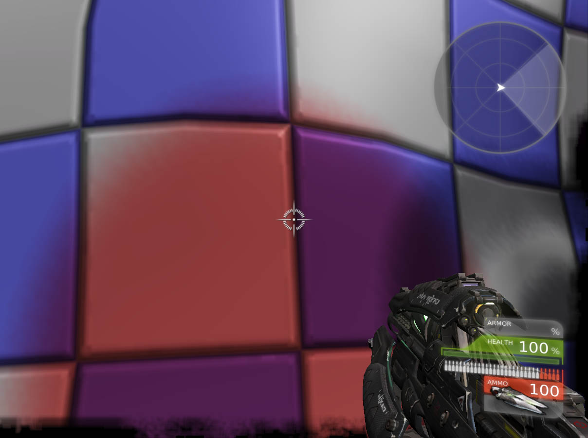
相关主题
Unrealscript
class DecalActorSpawnable extends DecalActorMovable;
defaultproperties
{
// bStatic 和 bNoDelete 可以阻止在运行时生成 actor。
bStatic=false
bNoDelete=false
}
class SimpleBlobShadowPawn extends UTPawn
placeable;
// 生成的简单模糊阴影。
var PrivateWrite DecalActorSpawnable SimpleBlobShadowDecal;
// 引用我们将要生成的原型简单模糊阴影 actor。
var(Shadow) const DecalActorSpawnable SimpleBlobShadowDecalArchetype;
simulated function PostBeginPlay()
{
local MaterialInstanceConstant DecalMaterialInstanceConstant;
Super.PostBeginPlay();
// 专用服务器不需要生成简单的模糊阴影
if (WorldInfo.NetMode == NM_DedicatedServer)
{
return;
}
// 没有模糊阴影原型
// 原型不是正确的类类型
if (SimpleBlobShadowDecalArchetype == None)
{
return;
}
// 生成简单的模糊阴影 actor
SimpleBlobShadowDecal = Spawn(SimpleBlobShadowDecalArchetype.Class, Self,, Location, Rot(49152, 0, 0), SimpleBlobShadowDecalArchetype);
if (SimpleBlobShadowDecal != None)
{
if (SimpleBlobShadowDecal.Decal != None && SimpleBlobShadowDecal.Decal.GetDecalMaterial() != None)
{
// 创建一个新材质实例，这样我们可以动态更换参数
DecalMaterialInstanceConstant = new class'MaterialInstanceConstant';
if (DecalMaterialInstanceConstant != None)
{
DecalMaterialInstanceConstant.SetParent(SimpleBlobShadowDecal.Decal.GetDecalMaterial());
SimpleBlobShadowDecal.Decal.SetDecalMaterial(DecalMaterialInstanceConstant);
}
}
// 将简单的模糊阴影附加给我自己
Attach(SimpleBlobShadowDecal);
}
}
defaultproperties
{
}
- 在第一次生成 Actor（UTPawn 继承于该 Actor）时执行 PostBeginPlay。
- 如果该 actor 在专用服务器上，那么中止。专用服务器不需要生成模糊阴影。
- 如果没有设置阴影原型，那么中止。
- 生成原型的实例，朝向下面。将这个实例赋给一个变量，这样我们就可以追踪它了。
- 检查贴花组件是否具有贴花材质。
- 如果有，那么创建一个新的材质实例，然后将其父代赋给当前贴花材质。它会允许我们更改属性，没有任何影响。
- 将生成的原型附加给我自己 (SimpleBlobShadowPawn)